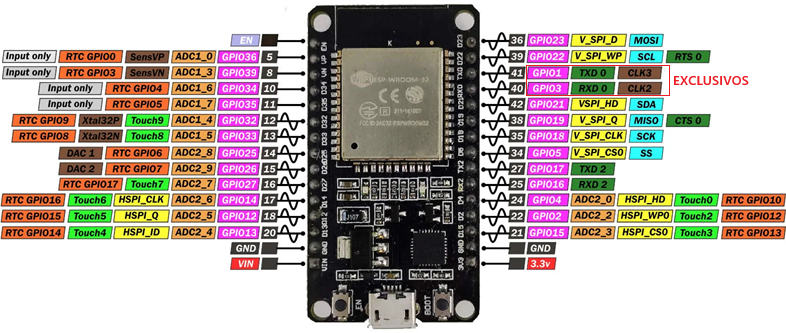
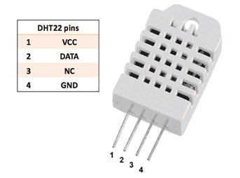
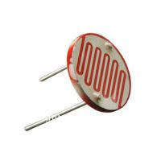
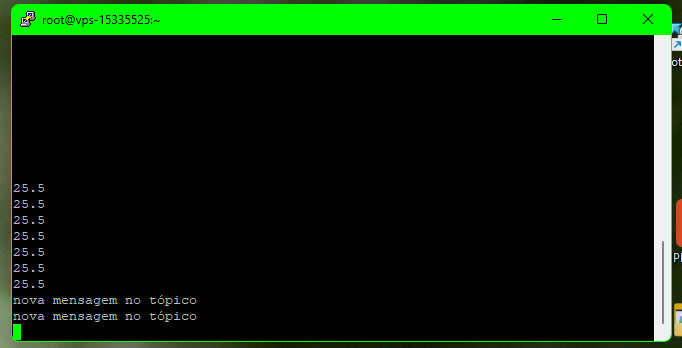
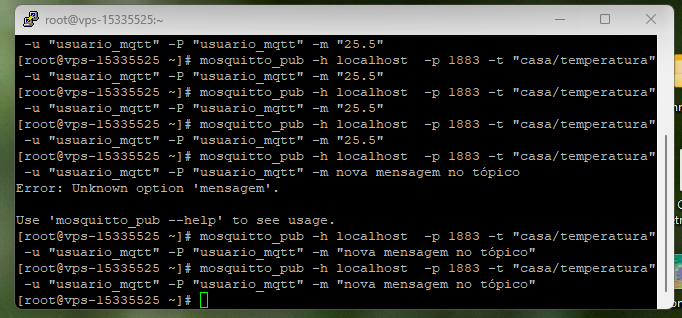
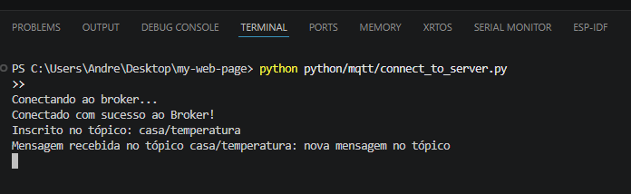

Projeto Node Telemetry
ESP32 Telemetry
Resumo
Este projeto de IoT (Internet of Things) apresenta o desenvolvimento de uma plataforma completa de
aquisição, armazenamento e apresentação de Dados recebidos de Sensores Remotos.
Etapas do Projeto:
- ESP32 e Sensores: Definição das variáveis medidas e conexão com o Hardware desejado.
- Mosquitto MQTT: Instalação do Broker responsável pela conexão e troca de mensagens.
- Node.js: Instalação do ambiente de execução da aplicação no backend.
- Firmware: Código fonte do Microcontrolador responsável pela coleta e envio das informações.
- Aplicação Node.js: Aplicação responsável pela escuta, armanezamento e visualização das mensagens.
- MySQL Database: Criação da base e tabelas para armazenamento persistente dos dados.
- Dashboard: Página com o resumo geral, histórico e alertas dos dispositivos..
Essa arquitetura proporciona uma solução escalável, de baixo custo e capaz de armazenar informações históricas para posterior consulta, análise e visualização por meio de uma interface web.
Conhecimentos: Eletrônica, SysAdmin,
Focado em manter os servidores, redes e
serviços funcionando corretamente.
É a figura tradicional que configura servidores web, gerencia usuários, cuida de backups e
prepara o
ambiente para receber a aplicação de forma estável.
Desenvolvimento do Projeto
Hardware
Foi definida a estrutura de hardware utilizado de acordo com nosso objetivo nesse projeto. O Microcontrolado escolhido foi o ESP32, para medição de temperatura e umidade está sendo usado o DHT22 que possui boa precisão e tempo de resposta, para a luminosidade um circuito divisor de tensão com um LDR, e por fim, alguns LEDs indicadores para Troubleshooting.
Microcontrolador ESP32 - Placa DEVKIT1

- Processador: Xtensa Dual-Core (ou Single-Core) de 32 bits LX6, operando de 160 a 240 MHz.
- Desempenho: Até 600 DMIPS.
- Memória RAM: 520 KB de SRAM (além de co-processador de ultra baixa potência - ULP).
- Memória Flash externa: Geralmente 4 MB (variável conforme o modelo da placa).
- ConectividadeWi-Fi: Protocolo 802.11 b/g/n (até 150 Mbps) em 2.4 GHz.
- Bluetooth: Versão 4.2 BR/EDR e BLE (Bluetooth Low Energy).
- Alimentação e TensõesTensão de Operação (Chip): 2.3V a 3.6V DC.
- Tensão Lógica (Pinos GPIO): 3.3V (os pinos não toleram 5V).
- Corrente de Operação: Média de 80 mA, podendo chegar a pico de 240 mA com Wi-Fi ativo.
- Periféricos e Pinos
- Conversores (ADC/DAC): Canais ADC de 12 bits e DAC de 8 bits.
- Interfaces digitais: SPI, I2C, UART, I2S, CAN.
- PWM: Pinos configuráveis com suporte a PWM.
Sensor de Temperatura e Umidade DHT22

- Tensão de Operação: 3,3 V a 5,5 VCC
- Consumo de Corrente: ≈ 1 mA a 1,5 mA (em medição); 40 μA a 50 μA (em standby)
- Temperatura de Operação: -40°C a 80°C
- Precisão de Temperatura: ± 0,5°C
- Faixa de Umidade: 0 a 100% de Umidade Relativa (UR)
- Precisão de Umidade: ± 2% UR (típica), podendo chegar a ± 5% UR
- Tempo de Resposta (Amostragem): 2 segundos
- Resolução: 0,1°C para temperatura e 0,1% UR para umidade
- Protocolo de Comunicação: Sinal digital de barramento único (1-Wire)
Luminosidade (Light Dependent Resistor)

IHM / HMI (Interface Homem-Máquina)
- 1 Led de 5mm Verde para Indicar Conexão Wi-Fi bem sucedida;
- 1 Led de 5mm Verde para Indicar Conexão ao Broker MQTT;
- 1 Led de 5mm Verde para Indicar Envio de Mensagem;
- 1 Led de 5mm Verde para Indicar Recebimento de Mensagem;
- 1 Botão para Reset de Configuração.
Configuração do Mosquitto MQTT
O Broker MQTT escolhido foi o Mosquitto, existem brokers públicos que poderiam ser utilizados, mas optei por ter meu próprio, isso garante controle total da plataforma, acesso a logs e configurações personalizadas. Em contrapartida, aumenta a carga do servidor e exige monitoramento.
1. Enable the EPEL Repository
O Software Mosquitto não faz parte do repositório padrão do AlmaLinux. Primeiro é necessário instalar os pacotes extras, do inglês EPEL Extra Packages for Enterprise Linux.
sudo dnf install epel-release -y
2. Refresh the Package Cache
Clear and update your package cache to ensure dnf recognizes the new repository:
sudo dnf clean all
sudo dnf makecache
3. Install Mosquitto
Run the install command using the correct RHEL package name. This single package automatically includes the client tools you need:
sudo dnf install mosquitto -y
4. Enable and Start
After the installation we need to enable and start the service:
sudo systemctl enable mosquitto
sudo systemctl start mosquitto
5. Verify the Installation
Once finished, verify that your client utilities (such as mosquitto_sub) are available by checking their version:
mosquitto_sub --help
sudo systemctl status mosquitto
6. Criação de um arquivo de senhas
Crie um arquivo de senhas: Use o utilitário integrado para gerar credenciais criptografadas para um usuário (substitua usuario_mqtt pelo nome desejado).
sudo mosquitto_passwd -c /etc/mosquitto/passwd usuario_mqtt
7. Insira as regras de acesso
Por padrão, a partir da versão 2.0+, o Mosquitto restringe o acesso apenas à interface local (localhost) e desativa conexões anônimas sem autenticação. Para permitir conexões de outros dispositivos na sua rede de forma segura, siga estas instruções:
sudo nano /etc/mosquitto/mosquitto.conf
Insira as linhas abaixo no arquivo para escutar conexões externas na porta padrão e validar logins.
listener 1883
allow_anonymous false
password_file /etc/mosquitto/passwd
Teste Local
Prompt 1 - Autenticação e Inscrição no Tópico Desejado, aguardando novas mensagens.
mosquitto_sub -h andre.belem.br -p 1883 -t "casa/temperatura" -u usuario_mqtt -P usuario_mqtt

Prompt 2 - Autenticação e Envio de Mensagens no Tópico de Interesse.
mosquitto_pub -h andre.belem.br -p 1883 -t "casa/temperatura" -u usuario_mqtt -P usuario_mqtt -m "25.5"

Teste Externo
Código em Python de um Cliente MQTT que se conecta ao tópico usando autenticação e envia uma mensagem.
import time
import paho.mqtt.client as mqtt
# Configurações do Broker e Autenticação
BROKER = "andre.belem.br" # Substitua pelo IP ou URL do seu broker
PORTA = 1883
TOPICO = "casa/temperatura"
USUARIO = "usuario_mqtt"
SENHA = "usuario_mqtt"
# Função executada quando a conexão é estabelecida
def ao_conectar(client, userdata, flags, rc, properties=None):
if rc == 0:
print("Conectado com sucesso ao Broker!")
client.subscribe(TOPICO)
print(f"Inscrito no tópico: {TOPICO}")
else:
print(f"Falha na conexão. Código de retorno: {rc}")
# Função executada quando uma nova mensagem chega
def ao_receber_mensagem(client, userdata, msg):
mensagem_texto = msg.payload.decode()
print(f"Mensagem recebida no tópico {msg.topic}: {mensagem_texto}")
# Inicializa o cliente MQTT (API Callback v2)
cliente = mqtt.Client(mqtt.CallbackAPIVersion.VERSION2)
# Configura as credenciais de usuário e senha
cliente.username_pw_set(USUARIO, SENHA)
# Define as funções de retorno (callbacks)
cliente.on_connect = ao_conectar
cliente.on_message = ao_receber_mensagem
# Conecta ao broker
print("Conectando ao broker...")
cliente.connect(BROKER, PORTA, 60)
# Inicia o loop de escuta em segundo plano
cliente.loop_start()
# Mantém o script rodando para receber as mensagens
try:
while True:
time.sleep(1)
except KeyboardInterrupt:
print("\nDesconectando...")
cliente.loop_stop()
cliente.disconnect()
print("Programa encerrado.")
Log do Terminal do VSCode mostrando o resultado

Configuração do Node.js
No Beck-End a aplicação Node é responsável por escutar e tratar as mensagens recebidas pelos dispositivos remotos conectados ao Broker MQTT.
1. Update the system repository
sudo dnf update -y
2. View available Node.js module streams:
sudo dnf module list nodejs
3. Enable your desired version stream (e.g., version 24):
sudo dnf module enable nodejs:24 -y
4. Install Node.js:
sudo dnf install nodejs -y
5. Verification:
node -v
npm -v
Firmware do ESP32
Escrevi o código em MicroPython usando a IDE Thonny, que tem as seguintes funções:
- Conectar a Rede Wi-Fi
- Conectar ao Broker MQTT
- Se inscrever no tópico desejado
- Ler o Sensor DHT22
- Ler o ADC conectado ao LDR
- Ler a data e hora do RTC
- Formatar os dados em um Python Dictionary
- Converter os dados para JSON
- Publicar no tópico desejado
Código Fonte:
# --- LIBRARIES ---
import network
import machine
import time
from machine import RTC, ADC, Pin
from umqtt.simple import MQTTClient
import dht
import ujson
# --- CONFIGURAÇÕES DE PINOUT ---
LED_BOARD = machine.Pin(2, machine.Pin.OUT)
PINO_DHT = machine.Pin(4, machine.Pin.IN, machine.Pin.PULL_UP) # Usando o GPIO4 para o Sensor
LED_WIFI = machine.Pin(23, machine.Pin.OUT) # LED Conexão WIFI
LED_MQTT = machine.Pin(22, machine.Pin.OUT) # LED Conexão ao BROKER
LED_SEND = machine.Pin(18, machine.Pin.OUT) # LED Envio de Mensagem
LED_RECEIVE = machine.Pin(19, machine.Pin.OUT) # LED Recebimento de Mensagem
LED_WIFI.value(0)
LED_MQTT.value(0)
LED_SEND.value(0)
LED_RECEIVE.value(0)
LDR = ADC(Pin(34)) # Configure GPIO 34 as an Analog Input
LDR.atten(ADC.ATTN_11DB) # Full range: ~0.0V to 3.3V best with 11dB attenuation
LDR.width(ADC.WIDTH_12BIT) # 12-bit resolution (0 - 4095)
# --- CONFIGURAÇÕES DA REDE ---
CLIENT_ID = "XXX"
WIFI_SSID = "XXX"
WIFI_PASSWORD = "XXX"
MQTT_BROKER = "XXX" # Meu broker
MQTT_PORT = XXX
MQTT_USER = "XXX
MQTT_PASSWORD = "XXX"
MQTT_TOPIC_SUB = "XXX"
MQTT_TOPIC_PUB = "XXX"
# --- DEFINE THE DATA VARIABLES ---
timestamp = "0000-00-00 00:00:00"
temperature = 00.0
humidity = 00.0
light_level = 0 # Example value within the 0-4096 range
# --- ORGANIZE DATA INTO A PYTHON DICTIONARY ---
sensor_data = {
"Client": CLIENT_ID,
"Time": timestamp,
"Temperature_C": temperature,
"Humidity_Percent": humidity,
"Light_ADC": light_level
}
# --- CONFIGURAÇÕES DE RELÓGIO ---
rtc = RTC()
#rtc.datetime((2026, 7, 17, 0, 23, 13, 0, 0)) # set time, eg. 2017/8/23 1:12:48
# --- INICIALIZAÇÃO DO SENSOR ---
DHT_SENSOR = dht.DHT22(PINO_DHT)
# --- FUNÇÃO PARA CONEXÃO DO WIFI ---
def do_connect(ssid, password):
wlan = network.WLAN(network.STA_IF)
wlan.active(True)
if not wlan.isconnected():
print('connecting to network...')
wlan.connect(ssid, password)
while not wlan.isconnected():
machine.idle()
print('network config:', wlan.ifconfig() )
LED_WIFI.value(1)
# --- FUNÇÃO PARA RECEBER MENSAGENS MQTT ---
def callback_mensagem(topico, mensagem):
print(
f"MSG RECEIVED: {topico.decode()}: {mensagem.decode()}"
)
LED_RECEIVE.toggle()
# --- MAIN ---
# Janela de segurança para salvar de travamentos
print("Iniciando em 5 segundos... Pressione Ctrl+C para cancelar.")
time.sleep(5)
# --- CONECTA O WIFI ---
do_connect(WIFI_SSID, WIFI_PASSWORD)
# --- CONFIGURA O MQTT ---
client = MQTTClient(
CLIENT_ID,
MQTT_BROKER,
port=MQTT_PORT,
user=MQTT_USER,
password=MQTT_PASSWORD,
)
client.set_callback(callback_mensagem)
# --- CONECTA AO BROKER E SE INSCREVE NO TÓPICO ---
try:
print("Conectando ao broker MQTT...")
client.connect()
print("Conectado ao MQTT!")
client.subscribe(MQTT_TOPIC_SUB)
print(f"Inscrito no tópico: {MQTT_TOPIC_SUB}")
LED_MQTT.value(1)
# Envia uma mensagem de inicialização
client.publish(MQTT_TOPIC_PUB, f"Cliente Conectado {CLIENT_ID}")
# 4. Loop para manter a conexão e checar novas mensagens
while True:
try:
# Realiza a leitura do sensor DHT22
DHT_SENSOR.measure()
# Realiza a leitura do sensor LDR
light_level = LDR.read() # High value (~4095) = Bright light, Low value (~0) = Complete darkness
# Coleta os dados convertidos e formata
temperature = "{:2.1f}".format(DHT_SENSOR.temperature())
humidity = "{:2.1f}".format(DHT_SENSOR.humidity())
# Coleta a data e hora e formata
agora = rtc.datetime()
timestamp = "{:04d}-{:02d}-{:02d} {:02d}:{:02d}:{:02d}".format(
agora[0], agora[1], agora[2], agora[4], agora[5], agora[6]) # Correto! (O segundo é o índice 7)
# --- ORGANIZE DATA INTO A PYTHON DICTIONARY ---
sensor_data = {
"Client": CLIENT_ID,
"Time": timestamp,
"Temperature_C": temperature,
"Humidity_Percent": humidity,
"Light_ADC": light_level
}
# --- CONVERT THE DICTIONARY TO A JSON STRING ---
json_message = ujson.dumps(sensor_data)
# Publica os valores no tópico
client.publish(MQTT_TOPIC_PUB, json_message)
LED_SEND.toggle()
# Mensagem informativa
print("Dados enviados para o BROKER.")
except OSError as e:
print("Falha ao ler o sensor DHT22")
client.check_msg() # Verifica se há mensagens recebidas
LED_BOARD.value(1) # Liga o LED
time.sleep(0.5) # Aguarda 1 segundo
LED_BOARD.value(0) # Desliga o LED
time.sleep(0.5) # Aguarda 1 segundo
except OSError as e:
print("Falha ao conectar ao MQTT:", e)
Aplicativo server.js
Foi criada uma aplicação utilizando Node.js responsável por:
- Conectar ao broker MQTT;
- Assinar os tópicos de interesse;
- Receber as mensagens publicadas pelos dispositivos;
- Validar os dados recebidos;
- Enviar os dados para a página HTML via Websocket;
- Inserir os registros no banco MySQL.
Também foram implementados mecanismos para tratamento de erros e registro de eventos.
Banco de Dados MySQL
Utilizando o MySQL instalado no projeto Gênesis foi criado uma database destinada ao armazenamento persistente dos dados enviadas pelos dispositivos IoT.
Criação de Usuário
Por questões de segurança (princípio do privilégio mínimo) criamos um usuário dedicado limitando os danos caso as credenciais sejam expostas.SQL
-- 1. Cria o usuário com uma senha forte
-- Substitua 'iot_user' pelo nome desejado e 'Senha_Forte_IoT_2026' por uma senha segura
CREATE USER 'iot_user'@'%' IDENTIFIED BY 'Senha_Forte_IoT_2026';
-- 2. Concede apenas as permissões de manipulação de dados no banco específico
GRANT SELECT, INSERT, UPDATE, DELETE ON iot_monitoring.* TO 'iot_user'@'%';
-- 3. Aplica as alterações de privilégios imediatamente
FLUSH PRIVILEGES;
Criação do Banco de Dados e Tabelas
Foi utilizada a abordagem de Duas Tabelas:Tabela de Leituras (sensor_data): Guarda apenas o ID do dispositivo, data/hora, temperatura, umidade e luminosidade. Ela cresce muito rápido.
Tabela de Status (device_status): Uma tabela separada que guarda apenas a última informação conhecida de IP, RSSI (Nível de Sinal do Wi-Fi), bateria, firmware e uptime de cada dispositivo. Ela é atualizada (UPDATE) a cada nova mensagem do aparelho, economizando espaço no banco de dados.
SQL
-- 1. Criação do banco de dados
CREATE DATABASE IF NOT EXISTS iot_monitoring;
USE iot_monitoring;
-- 2. Tabela de Cadastro e Status Atual do Dispositivo
-- Guarda as informações operacionais mais recentes e dados estáticos
CREATE TABLE IF NOT EXISTS devices (
device_id VARCHAR(50) NOT NULL,
device_name VARCHAR(100) NULL,
ip_address VARCHAR(45) NULL, -- Suporta IPv4 e IPv6
rssi INT NULL, -- Intensidade do sinal Wi-Fi (dBm)
battery_level DECIMAL(5,2) NULL, -- Nível da bateria (ex: 98.50%)
firmware_version VARCHAR(20) NULL, -- Versão do código rodando no hardware
uptime BIGINT UNSIGNED NULL, -- Tempo ativo em segundos desde o boot
last_ping TIMESTAMP DEFAULT CURRENT_TIMESTAMP ON UPDATE CURRENT_TIMESTAMP, -- Último contato
PRIMARY KEY (device_id)
) ENGINE=InnoDB;
-- 3. Tabela de Telemetria (Histórico de Leituras dos Sensores)
-- Otimizada para inserções rápidas e consultas temporais
CREATE TABLE IF NOT EXISTS sensor_data (
id BIGINT AUTO_INCREMENT NOT NULL,
device_id VARCHAR(50) NOT NULL,
temperature DECIMAL(5,2) NOT NULL, -- Permite valores negativos e precisão (ex: -10.50 a 99.99)
humidity DECIMAL(5,2) NOT NULL, -- Umidade relativa (ex: 65.40%)
light_intensity INT NOT NULL, -- Luminosidade em Lux ou porcentagem
created_at TIMESTAMP DEFAULT CURRENT_TIMESTAMP, -- Momento exato da leitura no banco
PRIMARY KEY (id),
CONSTRAINT fk_sensor_data_device
FOREIGN KEY (device_id) REFERENCES devices(device_id)
ON DELETE CASCADE ON UPDATE CASCADE
) ENGINE=InnoDB;
-- 4. Criação de Índices para Otimização de Consultas
-- Evita lentidão no futuro quando a tabela de leituras tiver milhões de registros
CREATE INDEX idx_sensor_data_device_date ON sensor_data (device_id, created_at);
CREATE INDEX idx_sensor_data_created_at ON sensor_data (created_at);
Problema Prático
Não precisou de muito tempo para ver o problema dessa abordagem ao escalar o sistema.
Eu quero ter informação segundo a segundo, para plotar um gráfico dinamico em tempo real, se há necessidade, obviamente não, para esses dados de pouca variação como temperatura e umidade, coletas a cada 10 minutos, já entregariam a informação com boa resolução temporal.
O que me facina é ver um sistema respondendo em tempo real, é tampar o LDR e o gráfico cair, soprar no sensor e a umidade disparar, e no meu conceito, o I do Iot, fala da Internet, que foi a Revolução que minha geração passou, é ter em segundos a resposta que tinha que ser garimpada na Biblioteca, saber em tempo real o que está acontecendo em qualquer parte do mundo, é agilidade, é resposta rápida.
Coletar um dado a cada 10 minutos, só postergaria o problema, ele é íntrísico nas bases de dados estáticas, como Oracle, MySQL, Postgresql. Elas foram projetadas, para guardar informação linear, como num livro, um registro que estará lá para sempre, páginas e páginas de linhas de pensamento ou um caminho necessário para entender assuntos complexos.
Já sensores fornecem Informação, ela é valiosa quando é novidade, e perde sua relevância com o tempo, no nosso projeto, eu quero saber a temperatura agora, no momento que veio a curiosidade, no momento que senti uma mudança no tempo, quero ver a resposta em tempo real, sentir que é ágil, imediata, como a Internet nos seduziu. Já a temperatura que fez ano passado nesse mesmo dia, basta-me saber se estava quente ou frio, ela não tem mais tanta relevância.
Isso prova que a informação não é linear, fazendo uma analogia com o corpo humano, nós sentimos e respondemos ao agora, tomamos decisões com base no que nossos desejos e sensores biológicos nos informam, e somos lineares no tempo, nossa vida passa segundo a segundo. Nossa memória, se comporta de forma não Linear, com o passar dos anos, o que nos Interessa do passado é resumido ao que foi marcante, um resumo com os tópicos imporantes, como uma compactação, e dessa maneira essa Inormação se torna valiosa, nos tras nostalgia, e a sensação de que naquele tempo era melhor.
Foi a maneira que a biologia encontrou de ter sensores com ótima resolução e resposta e guardar numa memória compacta um século de informação.
Eu já conhecia o RRDTool, ele guardava o histórico do tráfego de rede dos equipamentos de telecomunicações na empresa que trabalhei, a necessidade e o problema são iguais,
Apache como Proxy Reverso
Para acessar o gráfico dinâmico, temos que acessar a página usando a porta no endereço, exemplo: http://andre.belem.br:4000 para resolver isso e deixar transparente para o usuário, é necessário configurar o Apache como proxy reverso.
Crie um novo arquivo chamado telemetry.conf:
sudo nano /etc/httpd/conf.d/telemetry_proxy.conf
Cole o código abaixo dentro dele:
<IfModule mod_proxy.c>
# 1. Encaminha as conexões de WebSocket (Crucial para o seu gráfico)
ProxyPass /telemetry/ws ws://127.0.0.1:3000/
ProxyPassReverse /telemetry/ws ws://127.0.0.1:3000/
# 2. Mantém o suporte caso o script use alguma rota HTTP comum na porta 3000
ProxyPass /telemetry/api http://127.0.0
ProxyPassReverse /telemetry/api http://127.0.0
</IfModule>
Liberar o SELinux no AlmaLinux
sudo setsebool -P httpd_can_network_connect 1
Testar e Reiniciar o Apache
sudo apachectl configtest && sudo systemctl restart httpd
Dashboard
Foi desenvolvida uma interface web para permitir:
- Consulta dos dados armazenados;
- Visualização em tabelas;
- Exibição de gráficos históricos;
- Monitoramento em tempo real;
- Visualizaçao dos dispositivos cadastrados.
Conclusão
A utilização dessas tecnologias demonstra uma arquitetura moderna para sistemas IoT, combinando comunicação assíncrona, armazenamento persistente de dados e tecnologias amplamente utilizadas no desenvolvimento de aplicações distribuídas. O resultado é uma plataforma robusta que pode ser expandida para diversas aplicações de monitoramento remoto e automação, servindo como base para projetos futuros.
Por fim, realizou-se a validação completa da plataforma, verificando o funcionamento integrado entre o ESP32, o broker MQTT, a aplicação Node.js, o banco de dados MySQL e a interface web. Os resultados demonstraram que a solução foi capaz de receber, armazenar e disponibilizar os dados de forma confiável, atendendo aos objetivos propostos pelo projeto.Implementações futuras incluem: monitoramento da Plataforma, acompanhamento de Logs, uso de memória e processador, configuração de múltiplos usuários e dispositivos.